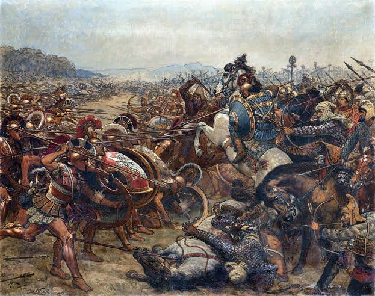

Battle of Marathon (c. 490 BCE)

The Battle of Marathon took place in September 490 BCE during the Greco-Persian Wars. It was fought on the plain of Marathon, in northeastern Attica, between the Athenians and the Persian army. The battle ended with a major Greek victory and stopped the first Persian invasion of Greece.
The Athenian army was led by ten generals, who were originally supposed to take turns commanding the troops. However, they disagreed about whether to wait for the Persians or attack them first. The disagreement was settled by Callimachus, an Athenian official who supported attacking. Several generals then gave up their turns in command in favour of Miltiades, who took the leading role in planning the battle.
The Athenians received support from approximately 1,000 soldiers from Plataea, giving them around 11,000 men in total. Although the Persian army was larger, Miltiades took advantage of the situation and strengthened the Greek army's wings. When the Greeks attacked, the Persian forces pushed back the centre of the Greek line, but the stronger Greek flanks surrounded them. The Persians were forced to retreat towards their ships. According to traditional accounts, the Persians lost around 6,400 men, while the Greeks lost 192 Athenians, including Callimachus.
The victory at Marathon was important because it showed that the Persian army could be defeated and gave the Athenians greater confidence in their military strength. It also became a symbol of Greek resistance against Persian expansion. The Persians would later invade Greece again, leading to further major battles during the Greco-Persian Wars.
The Battle of Marathon is also connected to the modern marathon race. According to a popular legend, a Greek messenger ran from Marathon to Athens to announce the victory before dying from exhaustion. However, the historian Herodotus describes a different story about a runner named Pheidippides, who travelled from Athens to Sparta before the battle to ask for military assistance. The traditional story of the messenger inspired the marathon race that is part of the modern Olympic Games.